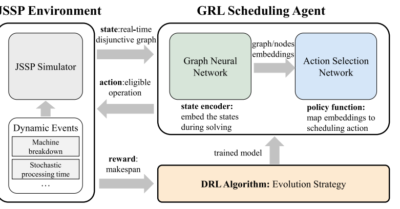
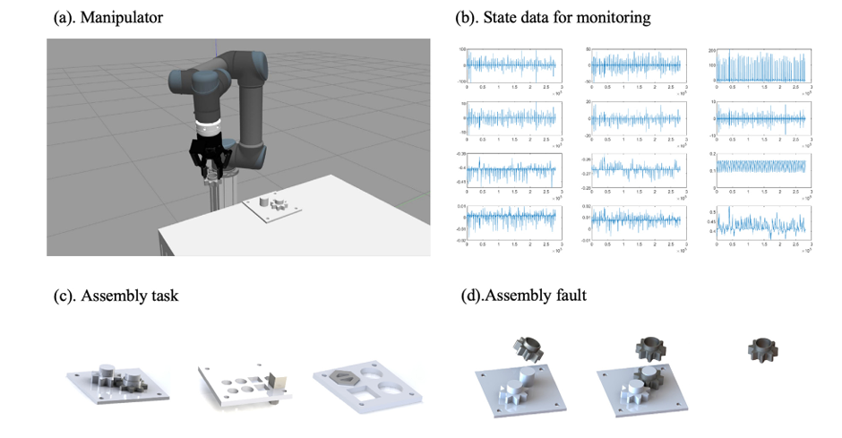
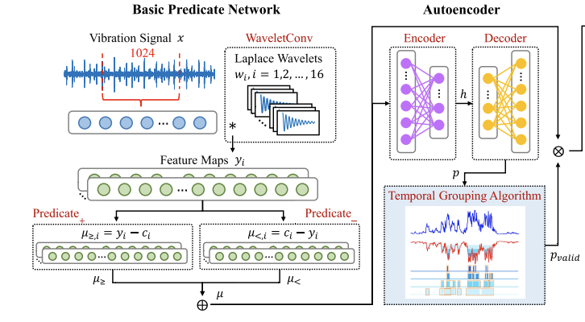

Open PDF
Introduction to Signal Temporal Logic
Syntax, semantics, and controller-oriented interpretations of temporal logic specifications.
Safe-by-construction control that compiles temporal specifications into actionable feedback policies, reference governors, and optimization-based supervisors.


Syntax, semantics, and controller-oriented interpretations of temporal logic specifications.

Control synthesis under complex temporal requirements with formal guarantees and recursive feasibility.

Integrated design of plant and controller under spectral and temporal performance specifications.
Representative papers are pulled from the current publication archive and embedded here so each module page has both visual entry points and a paper list beneath them.
These links make the modular page part of the full site flow rather than a dead-end standalone file.